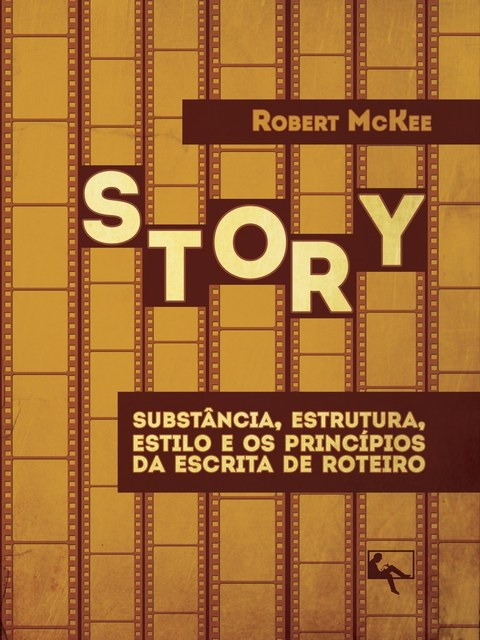

Pedra Basilar • Publicado em 1997
"Story: Substância, Estrutura, Estilo e os Princípios da Escrita de Roteiro"
Descrição Oficial
Considerado a bíblia mundial dos roteiristas e contadores de histórias, Story investiga a substância interior da dramaturgia, rejeitando fórmulas mecânicas e maniqueísmos em favor de formas arquetípicas vivas e universais. McKee disseca os três níveis de conflito, a orquestração do elenco e a Ideia Governante que ancora o clímax sob máxima pressão moral.
Posicionamento no Canteiro
No Canteiro do NarrATO, McKee fornece a viga mestra da forma viva contra a fórmula morta. É a nossa bússola para garantir que o enredo sirva à verdade moral do personagem, e não a truques baratos de mercado.